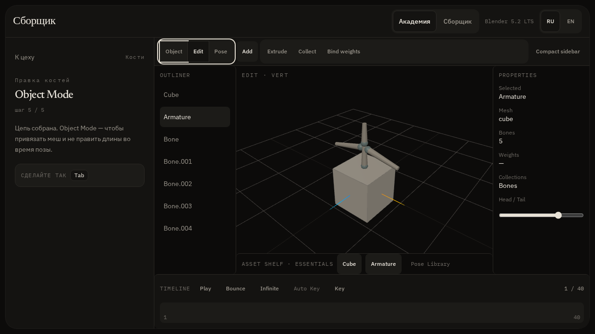
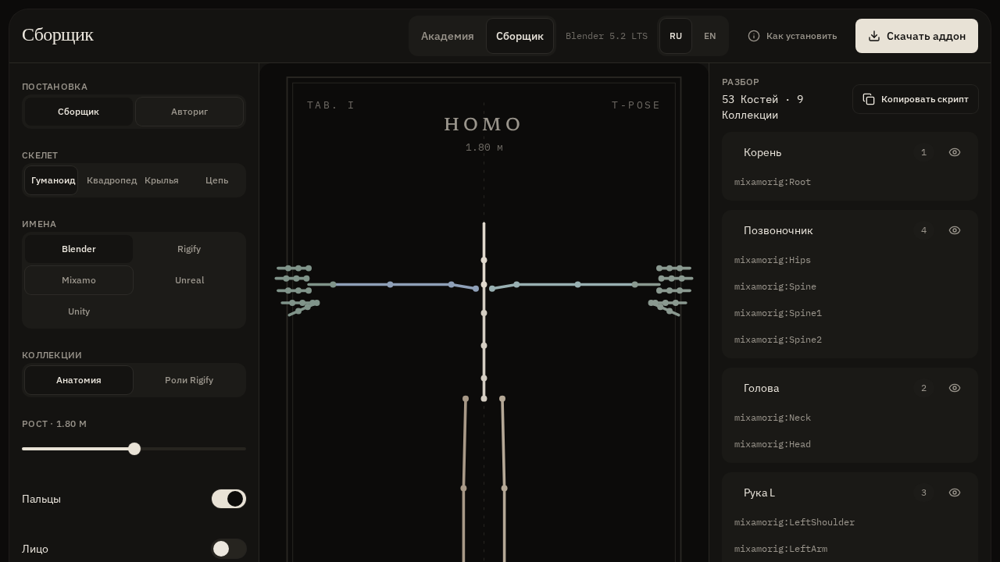
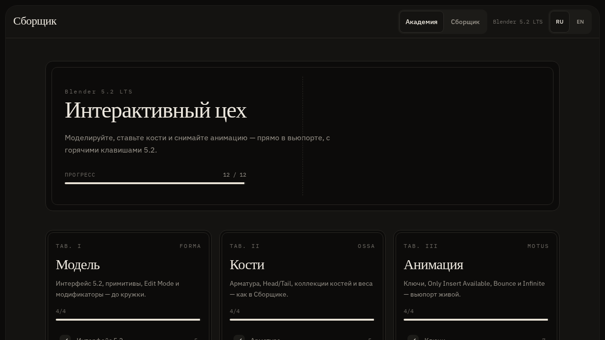

Собрать кости
Классифицирует активную арматуру: руки L/R, кисти, ноги, позвоночник, механика. Красит. Прячет IK.
BLENDER 5.2 LTS · RIGGING
Раскладывает арматуру по коллекциям и строит гуманоидный скелет. Mixamo, Rigify, имена Blender — одним оператором.

Классифицирует активную арматуру: руки L/R, кисти, ноги, позвоночник, механика. Красит. Прячет IK.
Гуманоид 1.8 м, пальцы, 53 кости, у 3D-курсора. Сразу в коллекциях сборщика.
Без зависимостей. Install from Disk. MIT. Панель во вкладке N → Сборщик.
| Коллекция | Попадает сюда |
|---|---|
| Корень | root, armature |
| Позвоночник | pelvis, spine, hips |
| Голова | head, neck, jaw, eye |
| Рука L / R | shoulder, arm, forearm |
| Кисть L / R | hand, thumb, fingers |
| Нога L / R | thigh, shin, foot, toe |
| IK / Механика | ik, pole, mch — по желанию скрыты |

